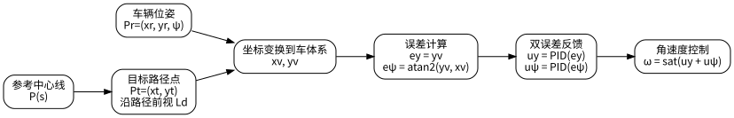
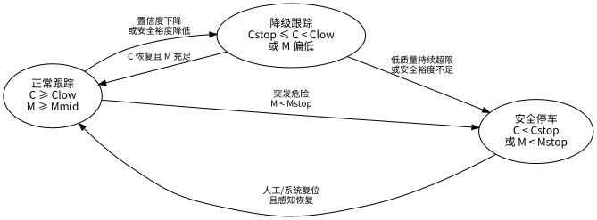
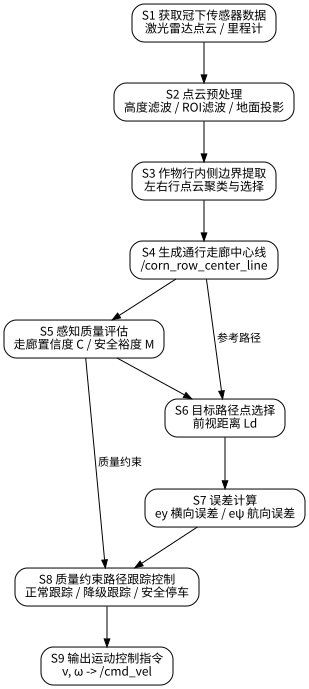
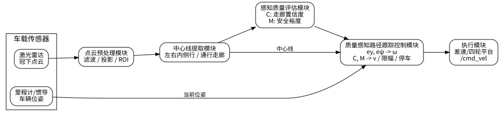
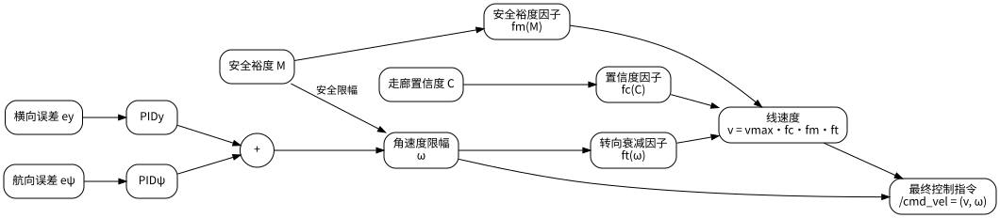

一种面向玉米冠下导航的感知质量约束路径跟踪方法及系统
本技术属于农业机器人自主导航与路径跟踪控制领域，具体涉及一种用于玉米等高秆作物冠下环境的感知质量约束路径跟踪方法及系统。该技术适用于农田无人平台在行间执行中耕除草、植保巡检、田间运输、自主采样等作业任务时的闭环导航控制。
玉米等高秆作物在生长中后期会形成明显的冠层遮挡，导致农田无人运动平台在冠下行驶时面临较强的感知与控制耦合问题。与开阔环境相比，冠下场景通常具有以下特点：
现有系统中，常见做法是先通过点云或视觉方法提取作物行中心线，再使用 PID、Pure Pursuit 或 Stanley 等控制器直接跟踪该中心线。这类方案在中心线检测稳定时可以工作，但存在以下缺陷：
因此，现有技术的核心问题不只是“如何提取中心线”，还包括“如何把中心线可靠性和通行安全空间引入路径跟踪控制闭环”，使机器人在冠下复杂环境中既能继续行驶，又能在风险增大时主动保守控制。
本技术提出一种面向玉米冠下导航的感知质量约束路径跟踪方法及系统。该系统不是单纯保护某一种中心线检测算法，也不是单纯保护某一种 PID 参数整定方法，而是提供一套“感知质量评估 + 路径跟踪控制约束 + 降级恢复 + 安全停车”的闭环控制框架。
本技术的总体思路是：
本技术系统至少包括以下模块：
在本项目当前 ROS2 实现中，上述模块对应关系如下：
| 模块 | 当前实现 |
|---|---|
| 环境感知模块 | /mid360_PointCloud2 激光点云输入、/odom 位姿输入 |
| 中心线提取模块 | corn_row_detector_projection 节点 |
| 感知质量评估模块 | corn_row_detector_projection 内部置信度与安全裕度计算 |
| 路径跟踪控制模块 | pid_controller 节点 |
| 执行模块 | /cmd_vel 底盘速度控制接口 |
输入点云记为：
$$ \mathcal{P}=\{p_i=(x_i,y_i,z_i)\mid i=1,2,\ldots,N\} $$
首先对点云进行高度约束和感兴趣区域约束，得到冠下候选点集：
$$ \mathcal{P}_{roi}= \left\{ p_i\in\mathcal{P} \mid x_{\min}\le x_i\le x_{\max}, y_{\min}\le y_i\le y_{\max}, z_{\min}\le z_i\le z_{\max} \right\} $$
然后将候选点集投影到地面平面：
$$ \Pi(p_i)=(x_i,y_i,0) $$
该步骤的作用是消除冠层上部点对冠下通行走廊判断的干扰，并把后续计算统一到二维平面内进行。
将投影点云按横向分布进行聚类，得到若干候选作物行簇：
$$ \mathcal{R}=\{R_1,R_2,\ldots,R_K\} $$
在车辆左右两侧分别选择距离车辆中心最近且满足支持点数量阈值的内侧行：
$$ R_L=\arg\min_{R_k:\bar y_k>0}|\bar y_k|, \quad R_R=\arg\min_{R_k:\bar y_k<0}|\bar y_k| $$
其中，\\bar y_k 为第 k 个候选行簇的横向中心。
这样做的目的是在多行同时进入传感器视场时，优先提取当前通行走廊两侧最近的内侧作物行，而不是错误地使用外侧第二行或第三行作为边界。
分别估计左右边界在行方向上的位置后，得到左右行横向位置 y_L 和 y_R，走廊宽度定义为：
$$ W=y_L-y_R $$
走廊中心线横向位置为：
$$ y_c=\frac{y_L+y_R}{2} $$
在作物行方向 θr 下，中心线可表示为：
$$ \mathbf{c}(s)= \mathbf{p}_0 + s \begin{bmatrix} \cos\theta_r\\ \sin\theta_r \end{bmatrix} + y_c \begin{bmatrix} -\sin\theta_r\\ \cos\theta_r \end{bmatrix} $$
其中，s 为沿作物行方向的路径参数。
在本项目实现中，感知节点支持在 base_link 坐标系下进行局部点云处理，并结合 odom 坐标系下相对稳定的全局行向估计来减弱机器人车体偏航对行向估计的影响。生成的中心线可以输出到 odom 坐标系，供控制器直接跟踪。
感知模块至少输出以下信息：
| 输出话题 | 类型 | 含义 |
|---|---|---|
/corn_row_center_line |
nav_msgs/Path |
用于路径跟踪的中心线 |
/corn_row_center_line_viz |
nav_msgs/Path |
车体系或可视化用中心线 |
/under_canopy_left_boundary |
nav_msgs/Path |
左作物行边界 |
/under_canopy_right_boundary |
nav_msgs/Path |
右作物行边界 |
/corridor_width |
std_msgs/Float32 |
当前走廊宽度 |
/corridor_safety_margin |
std_msgs/Float32 |
当前安全裕度 |
/corridor_confidence |
std_msgs/Float32 |
当前走廊置信度 |
走廊置信度 C 用于表征当前中心线是否可靠。其本质不是某一个单一传感器读数，而是对“当前这条中心线是否值得控制器信任”的综合评价。
在本技术中，走廊置信度可以由以下指标中的两项或多项加权得到：
综合置信度可写为：
$$ C=w_p C_p+w_w C_w+w_s C_s+w_h C_h $$
其中：
$$ w_p+w_w+w_s+w_h=1,\quad 0\le C\le 1 $$
一个可实施的定义方式如下。
点云数量置信度：
$$ C_p= \min \left( 1, \frac{\min(n_L,n_R)}{n_{\min}} \right) $$
行距合理性置信度：
$$ C_w= \exp \left( - \frac{(W-W_d)^2}{2\sigma_W^2} \right) $$
中心线连续性置信度：
$$ C_s= \min \left( 1, \frac{L_{valid}}{L_{ref}} \right) $$
历史稳定性置信度：
$$ C_h= \exp \left( - \frac{|\Delta y_c|}{\sigma_y} - \frac{|\Delta\theta_r|}{\sigma_\theta} \right) $$
其中，nL 和 nR 分别为左右边界的支持点数量，Wd 为期望行距，Lvalid 为当前有效中心线长度，Δyc 和 Δθr 分别为与上一时刻相比的中心线横向跳变量和方向角跳变量。
设无人平台宽度为 B，当前走廊宽度为 W，则安全裕度 M 可定义为：
$$ M=\frac{W-B}{2} $$
若需要进一步考虑车体摆动、叶片接触容忍度或安全缓冲距离 Bs，则可写为：
$$ M=\frac{W-B}{2}-B_s $$
安全裕度越大，说明平台两侧余量越充足；安全裕度越小，说明平台接近作物行边界，碰撞风险更高。
在中心线 c(s) 上，先查找距离平台当前位置最近的路径参数：
$$ s^\ast=\arg\min_s \left\|\mathbf{c}(s)-\mathbf{p}_r\right\| $$
再沿中心线向前选取前视距离 Ld 对应的目标路径点：
$$ \mathbf{p}_t=\mathbf{c}(s^\ast+L_d) $$
其中，pr 为平台当前位置，pt 为目标路径点。
误差模型如图3所示。

设平台当前位姿为 Pr=(xr,yr,ψ)，目标点为 (xt,yt)。将目标点转换到车体坐标系：
$$ \begin{bmatrix} x_v\\ y_v \end{bmatrix} = \begin{bmatrix} \cos\psi & \sin\psi\\ -\sin\psi & \cos\psi \end{bmatrix} \begin{bmatrix} x_t-x_r\\ y_t-y_r \end{bmatrix} $$
横向误差定义为：
$$ e_y=y_v $$
航向误差定义为：
$$ e_\psi=\operatorname{atan2}(y_v,x_v) $$
控制器分别根据横向误差和航向误差构造反馈项。
横向误差控制项：
$$ u_y(t)=K_{py}e_y(t)+K_{iy}\int_0^t e_y(\tau)d\tau+K_{dy}\frac{de_y(t)}{dt} $$
航向误差控制项：
$$ u_\psi(t)=K_{p\psi}e_\psi(t)+K_{i\psi}\int_0^t e_\psi(\tau)d\tau+K_{d\psi}\frac{de_\psi(t)}{dt} $$
原始角速度控制量：
$$ \omega_{raw}=u_y+u_\psi $$
这样做的原因是：横向误差项主要用于把车辆拉回中心线附近，航向误差项主要用于使车辆朝向目标点方向，从而兼顾回中能力和姿态收敛能力。
为了避免在狭窄走廊中使用过大的转向动作，角速度上限随安全裕度而动态变化：
$$ \omega= \operatorname{sat} \left( \omega_{raw}, -\omega_{\max} f_m(M), \omega_{\max} f_m(M) \right) $$
其中，sat(x,a,b)=min(max(x,a),b)。
安全裕度因子 fm(M) 可定义为分段函数：
$$
f_m(M)=
\begin{cases}
0, & M 其中 0 < α1 < α2 < 1。 为使平台在感知不可靠或走廊变窄时主动降速，本技术对线速度进行多因素约束。 置信度因子可定义为： $$
f_c(C)=
\begin{cases}
1, & C\ge C_{high}\\
\max(f_{min}, C), & C_{stop}\le C 转向速度衰减因子可定义为： $$
f_t(\omega)=
\operatorname{clamp}
\left(
1-\lambda\frac{|\omega|}{\omega_{\max}},
f_{turn,min},
1
\right)
$$ 最终线速度为： $$
v=v_{\max}\cdot f_c(C)\cdot f_m(M)\cdot f_t(\omega)
$$ 该设计使机器人在以下情况下自动表现出更保守的控制行为： 状态转换如图4所示。  本技术设置三个运行状态： 为避免当前中心线在短时间内抖动导致系统立即停车，本技术引入历史可靠中心线恢复机制： $$
\mathcal{L}_{hist}(t)=
\begin{cases}
\mathcal{L}(t), & C(t)\ge C_{low}\\
\mathcal{L}_{hist}(t-1), & C(t) 当走廊置信度下降但仍高于停车阈值时，且低置信连续帧数不超过允许上限 Nmax，控制器可继续调用历史可靠中心线： $$
C_{stop}\le C 当低置信连续帧数超过上限时，系统进入安全停车： $$
N_{low}>N_{max}\Rightarrow v=0,\ \omega=0
$$ 这部分机制是本技术的重要特点。它解决的不是“完全没有中心线怎么办”，而是“中心线暂时不稳定但还没彻底失效时怎么办”的问题。 在当前工程实现中： 当前实现中可直接配置的典型参数包括： 上述参数可以根据作物行距、车体宽度、作业速度和传感器安装高度进行调整。 本技术还可以进一步扩展以下内容： 一组可选扩展公式如下。 离散路径点曲率可近似为： $$
\kappa_i=
\frac{2\sin\Delta\theta_i}
{\left\|\mathbf{p}_{i+1}-\mathbf{p}_{i-1}\right\|}
$$ 引入曲率前馈后： $$
\omega=v\kappa+u_y+u_\psi
$$ 自适应前视距离可定义为： $$
L_d=L_{\min}+(L_{\max}-L_{\min})\exp(-k|\kappa|)
$$ 与现有仅跟踪中心线而不考虑中心线质量和通行空间的方案相比，本技术具有以下优势： 根据当前仿真对照实验结果，质量感知控制与普通 PID 相比，在总体横向 RMSE 接近的情况下，能够明显降低低质量阶段的停车比例，提高中心线可用率和平均安全裕度。这说明本技术的主要优势在于连续性、安全性和鲁棒性提升，而不是单纯追求极限误差更小。 除上述实施方式外，本技术还可以采用以下替代方案：  图1展示了本技术从感知输入到控制输出的整体流程。其详细步骤为： 该图强调的是整个技术链条并不是“检测完中心线就直接控制”，而是在中心线与控制器之间增加了感知质量评价和控制约束环节。  图2展示了系统中各功能模块之间的组成关系和数据流关系。其核心连接关系为： 图2主要说明本技术不是单一算法点，而是一套可以工程部署的完整系统结构。 图3展示了控制器如何从中心线目标点构造误差量。图中需要重点说明： 该图对应的是路径跟踪控制中的核心误差建模步骤。 图4展示了本技术区别于传统路径跟踪方案的重要控制机制，即三状态控制逻辑： 该图的重点在于说明本技术增加了一个介于“正常运行”和“立即停车”之间的降级恢复层，从而更适合冠下感知间歇波动的实际场景。 5.5 走廊置信度和安全裕度共同约束线速度
6. 正常跟踪、降级跟踪和安全停车机制
状态
条件
控制策略
正常跟踪
C ≥ Clow 且 M ≥ Mmid
使用当前中心线正常跟踪
降级跟踪
Cstop ≤ C < Clow 或安全裕度偏低
使用历史可靠中心线低速跟踪
安全停车
C < Cstop 或 M < Mstop
发布零速度指令
7. 一种可实施的软件实现方式
corn_row_detector_projection；pid_controller；/mid360_PointCloud2；/odom；/corn_row_center_line；/corridor_confidence；/corridor_safety_margin；/cmd_vel。
参数
作用
典型值
z_min点云最低高度
0.0
z_max点云最高高度
0.5
x_min前向 ROI 起点
0.0
x_max前向 ROI 终点
2.0
y_min横向 ROI 左限
-1.0
y_max横向 ROI 右限
1.0
path_length输出中心线长度
2.0
path_step中心线采样步长
0.1
platform_width平台宽度
0.30
desired_row_separation期望行距
0.8
target_distance前视距离
0.4
max_linear_speed最大线速度
0.4
max_angular_speed最大角速度
1.0
confidence_low_threshold低置信阈值
0.45
confidence_stop_threshold置信停车阈值
0.25
safety_margin_mid中间安全裕度阈值
0.10
safety_margin_stop安全停车阈值
0.05
max_low_confidence_frames允许低置信恢复帧数
10
8. 可选扩展方式
四、技术优势
五、替代方案
六、附图及详细说明
图1 方法总体流程图
图2 系统结构框图
图3 横向误差和航向误差计算示意图
图4 正常跟踪、降级跟踪和安全停车状态转换图
图5 质量感知路径跟踪控制框图
图5展示了走廊置信度和安全裕度如何进入控制器。其关键说明如下：
该图体现了本技术的核心创新点：感知质量不是仅用于“显示”或“报警”，而是直接参与速度规划、角速度限幅和状态切换。
本技术交底的重点不在于某一个单独的公式、某一个单独的节点名称或某一组固定参数，而在于如下整体技术构思：
如果后续专利代理机构需要进一步拆分为方法、系统、装置或存储介质等不同法律表达形式，可在保持上述技术核心不变的前提下进行整理。